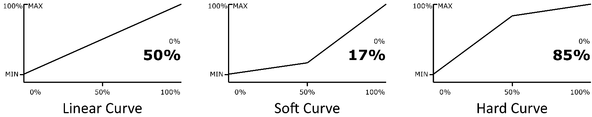

ESPEED32 User Manual
User-focused guide for slot car racing: startup, key driving controls, menus, and backup/restore.
- Firmware source: ESPEED32 v4.8 (
source/ESPEED32/). - Local manuals in repo: Quick Start + Extended Guide (DOC folder, DOCX/PDF).
- ACD reference: ACD PRO Manual 11E.
- CarSteen reference: CS 4.2 Owner's Guide.
1. Quick start
- Power the controller normally.
- Rotate encoder to move through menu items.
- Short press encoder: enter/exit value editing or open submenu.
- Short press brake button while editing: cancel (restore original value).
- Long press encoder (~1s): toggle LIST and race GRID view (when race view is not OFF).
2. Startup, calibration and self-test
- Recalibrate trigger after firmware update, or if trigger mechanics have changed.
Power ON: normal startup, then RUNNING mode.- For
TLE493Dbuilds, sensor variant/address is auto-detected on boot (no manual address edit needed). - Hold
encoder buttonduring power on: trigger calibration. - Hold
brake buttonduring power on: Self-Test (9 steps).
Calibration flow
- Hold encoder while powering on until calibration screen appears.
- Fully press/release trigger several times.
- Press encoder once to store calibration.
- Verify throttle reads 0% at released trigger and 100% at full pull.

Trigger mechanics
- Trigger travel can be changed mechanically with the rear travel-stop screw.
- Trigger return feel depends on spring preload/return tension; adjust the spring anchor or tension slider carefully.
- After changing trigger travel or spring tension, recalibrate trigger before driving.
3. Critical while driving: BRAKE, B_BTN and R-BRAKE
BRAKE
When trigger is fully released, the controller applies normal braking using the BRAKE value.
B_BTN (Brake Button)
B_BTNis an alternate brake percentage (0-100%), not a relative reduction.- It is applied only when trigger = 0 and you hold the brake button.
- If the status bar shows OUTPUT, it displays
Bxxx%while the brake button is held. - Typical use: temporary extra hard/soft corner entry braking without changing base setup.
R-BRAKE (Release Brake)
R-BRAKEhas three modes:OFF,QUICK, andDRAG.QUICKis the old pre-release brake zone: below the selectedZone, controller cuts drive and appliesLevelas brake force.DRAGonly acts while you are actively releasing the trigger inside the selected zone. It blends output with drag and feels softer than QUICK.Zoneis used by bothQUICKandDRAG. In QUICK it is a real zero-output zone near trigger release.- So with
QUICKactive it is normal to see a few%Ton screen while output still remains0%until trigger moves above the selected zone. - Main difference:
QUICKis a hard cut inside the zone, whileDRAGkeeps throttle active and only adds drag while the trigger is moving toward release. - Typical QUICK use: tracks or cars that need a clear early brake hit. Example:
Zone6-10% andLevel70-100% for a strong, repeatable brake as you start to release the last part of trigger travel. - Typical DRAG use: nervous cars that feel too abrupt with QUICK. Example:
Zone10-20% andLevel20-50% to add gentle deceleration while releasing, without the full cut-to-zero feel. Zonerange: 0-50%.Levelrange: 0-100%.- Use QUICK for a clear early brake hit. Use DRAG for smoother release support without the abrupt feel of full quick brake.
4. Main menu parameters
Terminology profiles
NOR/ESP/DEU/ITA: localized UI using the standardBRAKE/SENSI/ANTIS/CURVE/LIMITnaming set.ENG: generic naming (BRAKE/SENSI/ANTIS/CURVE/LIMIT).CS: CarSteen-style terms (ATTACK/CHOKE2/PROFIL/CHOKE1).ACD: ACD-style terms where directly applicable (SENSIandCHOKEfor limit).ANTISremains anti-spin because the ACD manual does not define a separate Choke2 term.
From CarSteen/ACD terms to ESPEED32
| Legacy term | ESPEED32 equivalent | Practical effect |
|---|---|---|
| Attack | SENSI | How hard the car launches at first trigger movement. |
| Choke / Choke2 | LIMIT + ANTIS | Top-end limitation and ramp smoothness. |
| Profile | CURVE | Trigger response shape (early vs late aggression). |
| Brake | BRAKE + B_BTN + R-BRAKE | Release braking and temporary/early braking behavior. |
Legacy setup example (from older guides): for a soft and controlled feel, start around SENSI 40, ANTIS 130 ms, CURVE 30, and adjust from there.
| Item | Range | Default | Description |
|---|---|---|---|
BRAKE | 0-100 % | 95 | Brake force when trigger is released. |
SENSI | 0-90 % (and <= LIMIT) | 20 | Minimum motor output at first measurable trigger movement. |
ANTIS | 0-500 ms | 30 | Anti-spin ramp duration. Higher value = softer power buildup. Encoder step is set globally in SETTINGS -> A STEP. |
CURVE | 10-90 % | 50 | Throttle mapping. 50 = linear. <50 softer start, >50 sharper start. |
PWM_F | 1.0-5.0 kHz | 3.0 | Motor PWM frequency. Higher value often softens low-end response. |
B_BTN | 0-100 % | 50 | Alternate brake value used while brake button is held and trigger is released. |
R-BRAKE | OFF/QUICK/DRAG + zone/level | OFF | Release-brake helper near trigger release. QUICK is stronger; DRAG is softer and only active while releasing. |
LIMIT | (SENSI+5)-100 % | 100 | Maximum motor output. <100 enables LIMITER warning. |
STATS | - | - | Lap counter, best lap, and scrollable lap history. |
CAR | 0-19 profiles | CAR0 | Select/manage profile, copy settings, reset car params. |
Linearity notes
LIMIT: linear cap in commanded output %. Real top speed on track is not perfectly linear.BRAKE: linear brake/drag command in %. Real braking feel depends on motor, tires, and track grip.SENSI: linear minimum output floor in %, but not a linear gain knob across the whole trigger travel becauseCURVEshapes the rest.ANTIS: mainly a time setting in ms. Once anti-spin is active, a higher value gives a longer/weaker ramp, but the overall feel is not perfectly linear because the low-speed bypass threshold also shifts with the setting.

5. Race view behavior (LIST vs GRID)
- LIST classic menu with all main items.
- GRID race screen for fast edits while driving.
DISPLAY -> RACE MODE: OFF / FULL / SIMPLE.- FULL grid: BRAKE, SENSI, ANTIS, CURVE (+ CAR if
RACESWPis ON). - SIMPLE grid: BRAKE, SENSI (+ CAR if
RACESWPis ON). - Long encoder press toggles LIST/GRID.
6. CAR menu workflow
SELECT: choose active car profile (0-19).RENAME: 4-character name editor (ASCII 32-122).RACESWP: ON allows profile switching directly from GRID mode.COPY: copy from one profile to another, or to ALL profiles.RESET: reset all car profiles (with confirmation).
7. SETTINGS and current draw
POWER submenu
SCRSV: screensaver line1/line2 text, timeout, and show-now.SLEEP: auto sleep timeout + manual sleep now (wake with encoder button).DEEP SLEEP: auto deep sleep (0 or 2-30 min) + manual.STARTUP: welcome delay 0-990 ms in 10 ms steps.
SETTINGS root items
STATS: show or hide the STATS entry in the main menu.A STEP: global ANTIS encoder step, 1-50 ms (default 5 ms). ANTIS itself stays per car profile.ENC INV: invert encoder rotation globally if the menu feels backwards on your hardware.
DISPLAY + ABOUT
STATUS BAR: 4 fixed slots. Each slot can showOUT%,THRO,CAR,CURR,VOLT, or blank.- While WiFi is active, the status bar shows
WIFI. It uses the first blank slot if available; otherwise slot 4 is temporarily overridden. ABOUTshows firmware/data version, detected trigger sensor, chip details, flash/heap, MAC addresses, and build date/time.
Estimated current draw (controller electronics)
| State | Estimate | Notes |
|---|---|---|
| Startup | 120 mA | Short boot and initialization phase. |
| Normal operation | 100 mA | Typical menu/race operation without WiFi. |
| WiFi module active | 150 mA | AP mode and web server active. |
| Screensaver | 80 mA | Display active, low interaction. |
| SLEEP (soft) | 55 mA (estimated) | OLED off, CPU 80 MHz, motor task suspended. |
| DEEP SLEEP | 10 mA (estimated) | Power-off-like state, wake by power cycle. |
Values are estimates and depend on supply voltage, hardware variant, and measurement setup. Motor load for the car is additional.
8. Driving tips
- Change one parameter at a time, then run 5-10 laps before the next change.
- Tune in this order:
SENSI, thenBRAKE, thenANTIS,CURVE, and finallyPWM_F. - 1/32 cars on low-grip tracks: try higher
ANTIS(around 100-150 ms) and softerCURVE(<50). - 1/24 cars on high-grip tracks: often lower
ANTIS(0-40 ms) and more directCURVE(50-70). - Use
B_BTNas a temporary cornering tool instead of changing BRAKE between heats. - Use
R-BRAKE QUICKwith low zone (5-12%) and medium level (40-70%) for clearer early braking. TryDRAGif you want the same area to feel softer. - If the car spins early in trigger travel: lower
SENSIor increaseANTIS. - If the car feels lazy on exit: raise
SENSIslightly or reduceANTIS.
9. WiFi/USB backup, restore and OTA
WiFi
- Open
SETTINGS -> WIFIto enter the WiFi submenu. START WIFI/STOP WIFI: starts or stops background WiFi immediately.INFO PAGE: opens the WiFi page directly and starts WiFi/AP automatically. Leaving the info page stops WiFi again (unless background mode was started first).SHOW QR: opens a full-screen WiFi QR code so phone/tablet can join the AP directly.AUTO OFF: set timeout for background WiFi (1-120 min, default 5 min).- While WiFi is active: connect to AP
ESPEED32_XXXX(passwordespeed32) and open OLED IP in browser (typically192.168.4.1). - On the info page you can use
Backup,Restore,Upload Firmware, and/docs.
Status bar behavior while WiFi is active: WIFI uses the first blank slot; if no blank slot exists, slot 4 is shown as WIFI until WiFi stops.
USB
- Open
SETTINGS -> USB INFO. - Use Chrome/Edge (WebSerial).
- Backup/restore works over USB; OTA requires WiFi mode.
Never remove power during OTA upload.
10. Menu tree (complete UI map)
ROOT (Main Menu) |- BRAKE |- SENSI |- ANTIS |- CURVE (graph view) |- PWM_F |- B_BTN |- R-BRAKE | |- Mode (OFF/QUICK/DRAG) | |- Zone (%) | |- Level (%) | `- Back |- LIMIT |- SETTINGS | |- POWER | | |- SCRSV | | | |- NOW | | | |- LINE1 | | | |- LINE2 | | | |- TIME (0-240 s, 0=OFF) | | | `- BACK | | |- SLEEP | | | |- SLEEP NOW | | | |- INTERVAL (0-10 min, 0=OFF) | | | `- BACK | | |- DEEP SLEEP | | | |- SLEEP NOW (power-off) | | | |- INTERVAL (0 or 2-30 min) | | | `- BACK | | |- STARTUP (0-99 x 10ms) | | `- BACK | |- DISPLAY | | |- RACE MODE (OFF/FULL/SIMPLE) | | |- LANGUAGE (NOR/ENG/CS/ACD/ESP/DEU/ITA) | | |- CASE (UPPER/Pascal) | | |- FONT SIZE (LARGE/small) | | |- STATUS BAR | | | |- SLOT 1 | | | |- SLOT 2 | | | |- SLOT 3 | | | |- SLOT 4 | | | `- BACK | | `- BACK | |- SOUND | | |- BOOT (ON/OFF) | | |- RACE (ON/OFF) | | `- BACK | |- STATS (ON/OFF) | |- A STEP (1-50 ms, default 5) | |- ENC INV (ON/OFF) | |- WIFI | | |- START/STOP WIFI | | |- INFO PAGE | | |- SHOW QR | | |- AUTO OFF (1-120 min, default 5) | | `- BACK | |- USB INFO | |- RESET | | |- CAR | | |- SETTINGS | | |- CALIBRATION | | |- EVERYTHING | | `- BACK | |- TEST (Self-Test, 9 steps) | |- ABOUT | `- BACK |- STATS `- CAR |- SELECT |- RENAME |- RACESWP (grid car select ON/OFF) |- COPY |- RESET `- BACK
Displayed labels can be UPPER or Pascal based on DISPLAY -> CASE.